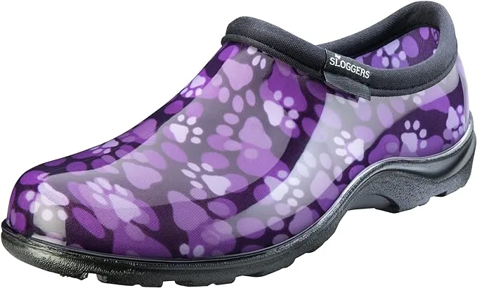
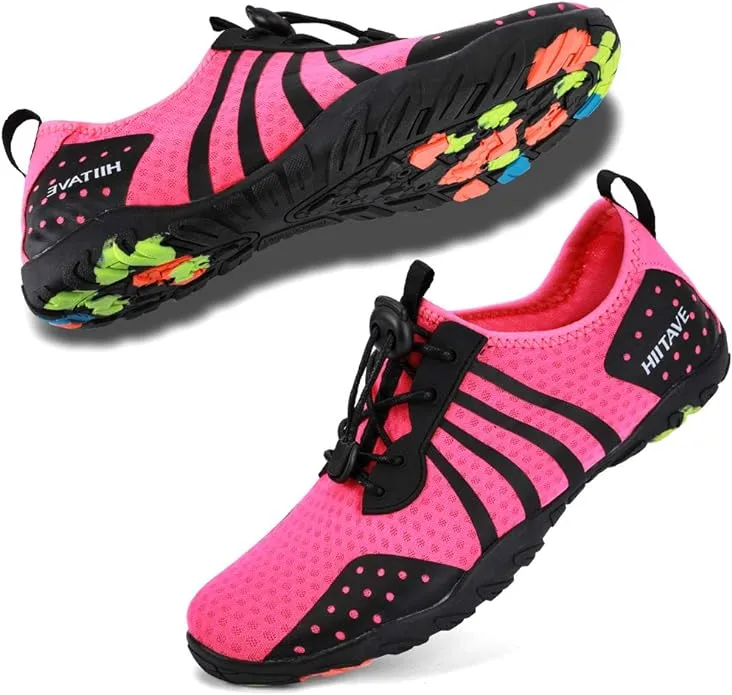
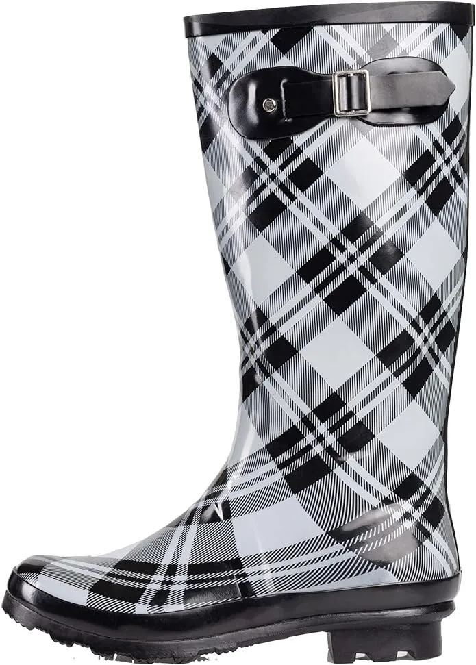
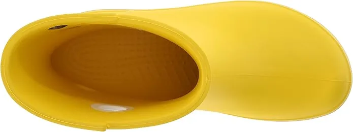
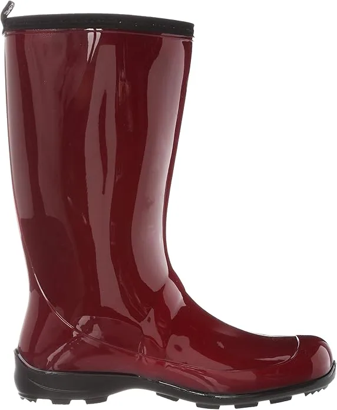
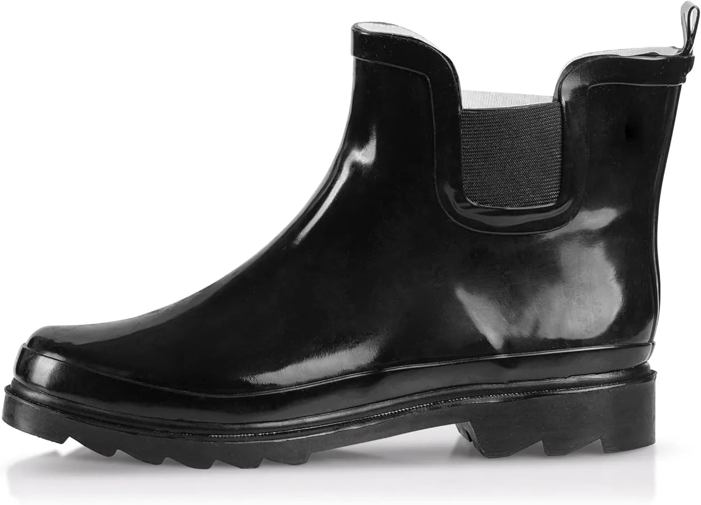

7 Best Shoes For Dog Groomers 2024
Grooming or cleaning especially of dogs or in other profession makes you untidy and can cause wear and tear in you shoes likewise when you comb the hairs of dog some hairs may fall on your shoe and can contaminate it. It is a headache to remove that hairs although we are presenting some of best solution for this problem these shoes are very sleek and tidy looking that any kind of pollutants are not visible on it.
Furthermore dog groomer shoes have a unique features. That are engineered very carefully. Following are the best shoes for professional groomers. These are one of the best articles availible in market
-
#1
Sloggers Women’s Waterproof Groomers
These are upgraded and excellent waterproof shoes. They are flexible as well as multipurpose shoes. They join a decent plan that upgrades comfort. You can wear them for the entire day without feeling any stress or creating rankles. They have entire day comfort insoles for total solace. To top everything, they have a profound drag signature track that gives you legitimate foothold.
They range from numbers 6-11, and they are made in the USA. Completely, they are for ladies shoes. The upper side is printed with paw prints and blossoms. Moreover, these extraordinary shoes are made of 100% recyclable material. They are accessible in entire sizes just, yet they fit you appropriately. -
#2
Womens’ Aqua Water Shoes
These are quite pashionate shoes that are good for a lot of exercises. They are astounding professional shoes that you can utilize, and no uncertainty your strength. Moreover, when you brush the canine’s hair, and it falls on the shoes, it doesn’t stick determinedly. You can without much of a stretch eliminate it, and stay clean. The material on the upper side is a 10% cotton mix. Moreover, these shoes have an elastic sole that can’t neglect you. For example, if the floor that you are dealing with is tiled, clearly it is dangerous.
At the point when the hair falls, and you step on it with the ordinary shoe, you can without much of a stretch slip, and fall. Nonetheless, these shoes are solid on account of their elastic sole. Besides, the air work on the upper side is both solid, and breathable. The innersole is intended to give you a decent ricochet back, and it is light in weight. -
#3
Women’s Sport Hydro Shoe

This model shoe has a great deal to be wanted. Especially on the off chance that you are one of the individuals who are sports devotees, this is the ideal shoe that you will never keep under control. Be that as it may, it can likewise be utilized as a component of the prepping clothing. These shoes are made of Chlorine safe material. In the event that you need to wash the canine, and afterward groom it, you can’t freeze. Inferable from the clingy elastic sole that improves better footing, you will be certain that you can’t fall.
Besides, the upper side is made of Synthetic material which is likewise a work. It is an ideal wellness coach that is incredible for dealing with wet surfaces. To top everything, it has an elastic sole that has great footing. -
#4
Norty 14 Solids Hurricane Wellie
These are high class, and astounding precipitation boots that you can wear during turbulent climate. You can likewise wear them when you are preparing your canine. They dislike the ordinary sort of wellingtons that individuals wear.
Norty 14 Solids have a smart example that adds quality to the boots and makes them eye-getting. To ensure your wellbeing, they have an elastic carry sole. They additionally have a 7/8 and 3/8 inch heel for solace, and soundness on the ground. They are 13.25 inches high to defend you from wetness, and sprinkles. To top everything, your legs remain totally dry. -
#5
Crocs Jaunt Shorty Womens’ Boot
Specialized canine care outfits are exemplary, and they have astonishing highlights. These boots have a more limited Croslite shaft which is positive for the wearer. Besides, they are agreeable on the grounds that they include a lightweight pad. The outsole is made of sturdy elastic that is likewise ideal for giving you ideal immovability on the ground. Moreover, the material that they are made of is likewise waterproof to keep your feet dry.
Decisively, the pole measures about 6.75 crawls from the curve. Besides, boot opening measures about 12.5 inches for what it’s worth. -
#6
Kamik Heidi Womens’ Boots
Kamik Heidi boots are extraordinary compared to other imported elastic downpour boots. They are useful for washing, yet in addition one of the professional canine care outfits. These extraordinary boots incorporate a cutting edge standpoint and excellent characteristics.
At the point when you are washing or cleaning, you can’t get your feet drenched in light of the fact that these boots are waterproof. They give a decent covering to your legs with a 11-inch shaft from the curve. To top everything, these boots give you total solace when you are preparing your canines. -
#7
Norty Womens’ Ankle Boots
Canine specialists have uncommon garbs that they clad in to play out their obligations. Professional canine care outfits consolidate these boots close by other attire.
The most extraordinary thing about them is that hair doesn’t adhere to them. At the point when you groom the canine and even touch the boot with the prepping brush, they can’t be sullied.
Hair and elastic are not viable, consequently no staying. They are warm and agreeable, and they give the floor a solid grasp.